LECTURE 30 · 数据、安全与未来
Agentic AI
和我们的未来
Agentic AI 和我们的未来：一学期操作系统课的总结与回望。
本讲目录 7 节
导语：从操作系统课走向 Agentic AI 时代
这是课程的最后一讲。前半段回顾复习方法和整学期知识地图，后半段讨论一个更宏大的问题：当大模型和 Agent 持续 scaling，操作系统、大学教育和个人的未来会发生什么变化？
课程一开始就给出了操作系统的两种视角：
- 应用视角：操作系统是一组管理硬件资源、支撑应用生态的 API；
- 硬件视角：CPU 不认识操作系统，只严格按指令和规范执行，操作系统与硬件共同演化。
flowchart LR
APP["应用程序"] --> API["操作系统 API"]
API --> OS["内核对象与资源管理"]
OS --> HW["CPU / 内存 / 设备"]
HW --> ISA["指令集规范"]
ISA --> CPU["CPU 按规范执行"]
CPU --> OS
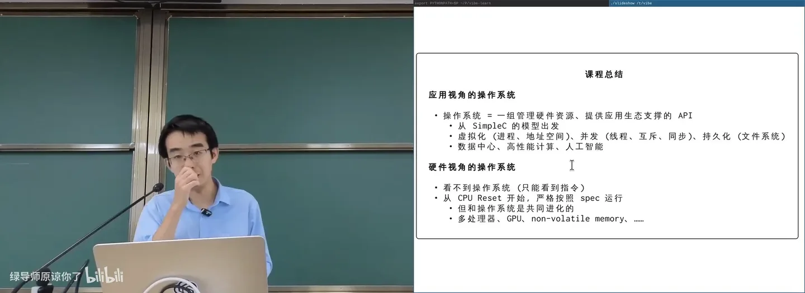
📷 操作系统是一组管理硬件资源并支撑应用生态的 API
回到原视频 (00:00:40)
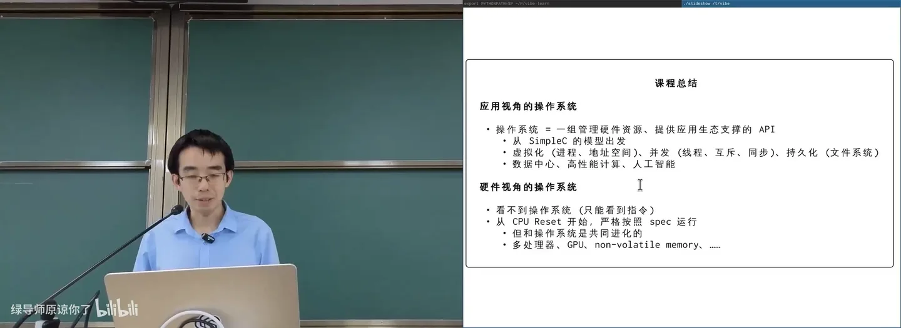
📷 应用视角与硬件视角共同构成操作系统的完整图景
回到原视频 (00:02:40)
1. 怎样复习操作系统
1.1 从需求出发，而不是背事实
这门课真正希望留下的，不只是若干 API 和系统调用，而是一套 first principles：
- 应用程序想做什么？
- 操作系统能怎样提供这个能力？
- 这个机制还能被怎样使用？
- 如果让我重新设计，我会怎么做？
flowchart TD
NEED["应用需求"] --> API["设计操作系统 API"]
API --> MECH["实现机制"]
MECH --> USE["应用如何使用"]
USE --> NEW["发现新的用法与问题"]
NEW --> NEED
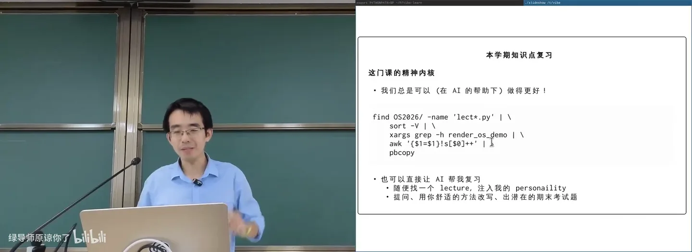
📷 复习时应从应用需求和 first principles 重新推导系统设计
回到原视频 (00:08:30)
课程中的 demo 都围绕一个原则：计算机系统里没有魔法。只要行为异常，就一定能通过代码、系统调用、硬件状态和调度顺序解释。
1.2 让 Agent 帮你构建复习工具
课程内容全部以代码和 Markdown 保存，因此可以被 Agent 直接读取、执行、分析和重组。最有效的方式不是只下载课件，而是让 Coding Agent：
- 克隆课程仓库；
- 整理目录；
- 编译运行所有 demo；
- 提取每节课的知识点和代码；
- 生成不同粒度的复习提纲；
- 针对每个知识点生成模拟题；
- 交互式追问和验证。
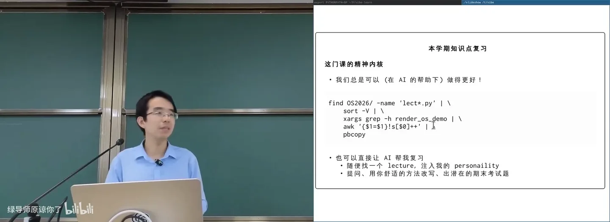
📷 Coding Agent 可以把零散课程文件整理成可运行的复习环境
回到原视频 (00:10:30)
1.3 Unix Philosophy：组合小工具完成大任务
Windows 生态偏向功能完整的单一应用，例如 Office 或 Adobe 全家桶。Unix 更强调让每个工具做好一件事，再通过管道组合。
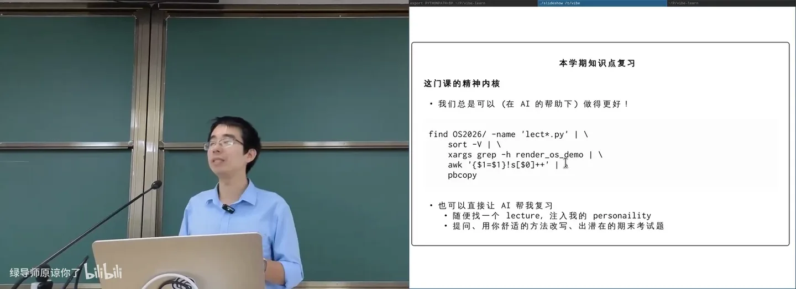
📷 Unix 强调组合小工具，Windows 更倾向完整应用生态
回到原视频 (00:14:00)
例如，从所有课件中收集课程 demo 可以写成：
find OS2026/ -name 'lect*.py' |
sort -V |
xargs grep -h render_os_demo |
awk '{$1=$1}!s[$0]++' |
pbcopy
这条管道依次完成：
- 找到课件文件；
- 按讲次自然排序；
- 搜索课程 demo；
- 去除重复行；
- 放入剪贴板。
flowchart LR
FIND["find"] --> SORT["sort -V"]
SORT --> XARGS["xargs grep"]
XARGS --> AWK["awk 去重"]
AWK --> CLIP["pbcopy"]
CLIP --> RESULT["整学期 demo 清单"]
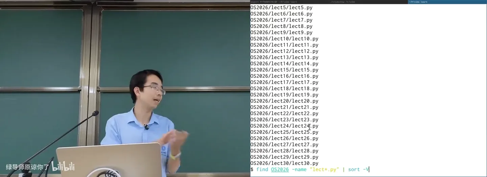
📷 Unix 管道把小工具组合成完整的数据处理流程
回到原视频 (00:18:00)
这也是 Agent 时代非常重要的能力：工具之间通过文本、文件和系统调用合作，而不是把所有逻辑封死在单个应用内。
1.4 用 AI 生成模拟题，但要保留判断
课堂现场让 Agent 根据课件出一套模拟卷，内容覆盖了：
- 并发控制与锁；
fork()对进程状态的复制；- 文件描述符和偏移量继承；
- 进程地址空间；
- 万能的条件变量同步方法；
- 文件系统崩溃一致性；
- 资源泄漏和线程安全的数据结构。
flowchart TD
LECT["Lecture Notes"] --> AGENT["Coding Agent"]
AGENT --> TOPICS["提取知识点"]
TOPICS --> QUESTIONS["按知识点生成问题"]
QUESTIONS --> MOCK["模拟卷"]
MOCK --> CHECK["学生作答与 Review"]
CHECK --> GAPS["发现知识盲点"]
GAPS --> TOPICS
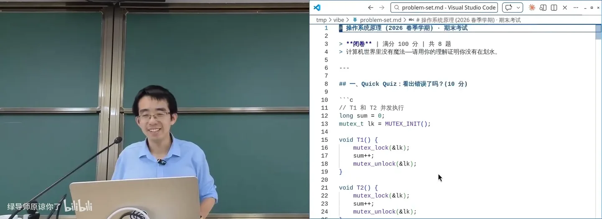
📷 AI 可以依据课件为每个知识点生成复习题和解释
回到原视频 (00:22:20)
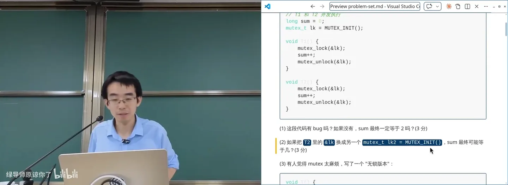
📷 AI 生成模拟卷后，学生仍需人工判断重点与正确性
回到原视频 (00:22:50)
但 AI 也有 alignment 问题。它认为重要的内容，未必和讲师的考试重点一致。正确用法是把它当作高吞吐的练习生成器和审阅器，而不是放弃自己的判断。
1.5 对照练习：把系统重新设计一遍
复习一个机制时，可以执行以下循环：
理解需求
-> 自己设计一个方案
-> 对照真实操作系统
-> 找出差异和原因
-> 用代码和实验验证
例如 fork() 会复制“所有状态”，不仅是程序变量，还包括：
- 地址空间；
- 文件描述符；
- 打开文件对象和偏移量；
- 信号处理状态；
- 操作系统对象引用。
flowchart TD
FORK["fork()"] --> MEM["复制地址空间"]
FORK --> FD["继承文件描述符"]
FD --> OFFSET["共享打开文件偏移量"]
FORK --> SIGNAL["继承信号状态"]
FORK --> OBJ["继承部分操作系统对象引用"]
MEM --> CHILD["子进程"]
FD --> CHILD
SIGNAL --> CHILD
OBJ --> CHILD
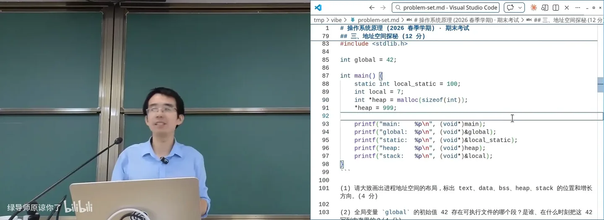
📷 理解 fork 的关键是理解“复制所有状态”的真实范围
回到原视频 (00:26:00)
2. 整学期知识地图
2.1 从数字电路到最小操作系统
课程从数字逻辑开始：时钟、导线、NAND 和寄存器构成数字系统，状态在每个时钟周期离散更新。随后：
- 用 C 实现数字电路模拟器；
- 实现 single-header RISC-V 模拟器；
- 运行无 MMU 的 Linux；
- 理解 CPU Reset 后的初始状态；
- 调试 SeaBIOS 和 OpenSBI；
- 构建最小可执行文件和最小操作系统。
flowchart LR
LOGIC["数字逻辑"] --> CPU["RISC-V / x86 CPU"]
CPU --> RESET["CPU Reset"]
RESET --> FIRMWARE["Firmware"]
FIRMWARE --> KERNEL["Kernel"]
KERNEL --> INIT["第一个用户进程"]
INIT --> WORLD["完整应用世界"]
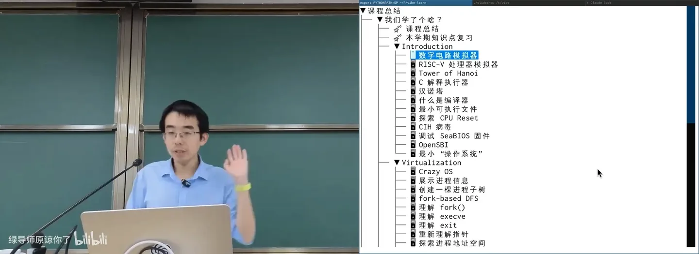
📷 课程从数字逻辑、模拟器和 CPU Reset 逐步构建计算机系统全貌
回到原视频 (00:35:20)
2.2 程序、编译器与系统调用边界
汉诺塔展示了 C 语言“顺序执行”和全局副作用的重要性。把递归程序改写成 SimpleC 后，可以明确看到：
- 每个函数调用对应一个栈帧；
- 栈帧必须记录执行位置；
- 函数调用是状态机的一次迁移；
- 编译器可以重写语义等价的状态迁移；
- 系统调用是编译器无法穿透的边界。
flowchart TD
STATE["当前程序状态"] --> STMT["执行一条 SimpleC 语句"]
STMT --> OPT["编译优化可重写"]
STMT --> SYSCALL["system call"]
SYSCALL --> OS["控制流进入操作系统"]
OS --> STATE2["返回一个可能被改变的世界"]
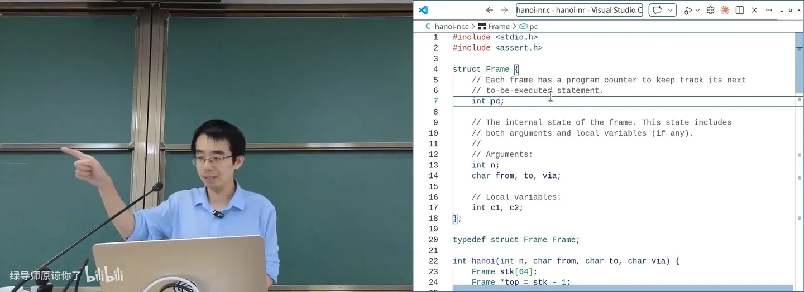
📷 编译器可以把普通语句重写为等价状态迁移，但不能穿透系统调用
回到原视频 (00:38:10)
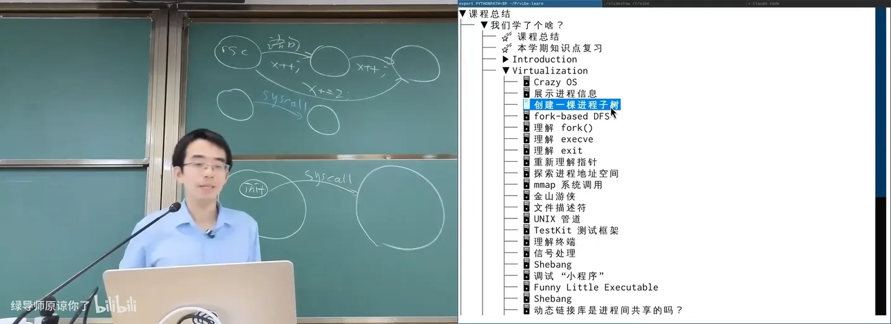
📷 CPU Reset 到第一个用户进程构成系统启动的完整链路
回到原视频 (00:41:50)
系统调用像一次麻醉手术：进程在调用期间无法感知外部世界，返回时地址空间、权限和对象状态都可能已经改变。
2.3 虚拟化：进程、地址空间与对象
Virtualization 部分从一个 init 进程开始，通过 fork、execve、exit 等系统调用构建进程树。
进程最重要的资源是虚拟地址空间。课程中的实验包括：
- 自行实现
malloc/free； - 使用
mmap按需分配大块内存； - 读取和修改其他进程的地址空间；
- 调试一个最简单 C 程序的每条指令；
- 通过文件描述符访问操作系统对象。
flowchart TD
INIT["init 进程"] --> PID["fork / execve / exit"]
PID --> TREE["进程树"]
INIT --> AS["虚拟地址空间"]
AS --> HEAP["mmap / malloc"]
AS --> CODE["可执行代码"]
AS --> STACK["线程栈"]
INIT --> FD["文件描述符"]
FD --> FILE["文件 / 管道 / Socket / 设备"]
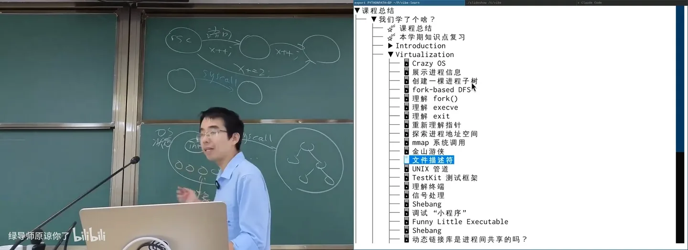
📷 进程树和虚拟地址空间共同构成应用运行的操作系统环境
回到原视频 (00:43:30)
2.4 Everything is a File 与动态链接
文件描述符是进程访问操作系统对象的句柄。Linux 把文件、管道、终端、Socket、设备等尽可能统一成文件接口。
动态链接进一步暴露了系统边界中的“可玩性”：
- 解释器可以在 libc 前加载其他库；
- 符号可以被预加载库覆盖；
LD_PRELOAD可以替换read、gettimeofday等函数；- 在应用和真实内核之间叠一层“模拟操作系统”。
课堂演示的“变速齿轮”通过覆盖时间相关 API，让应用看到十倍速度的虚拟时间。
flowchart LR
APP["应用程序"] --> LIBC["libc"]
PRELOAD["LD_PRELOAD 虚拟层"] --> LIBC
LIBC --> SYSCALL["真实系统调用"]
PRELOAD --> TIME["替换时间 API"]
TIME --> SLOW["改变应用感知的时间尺度"]
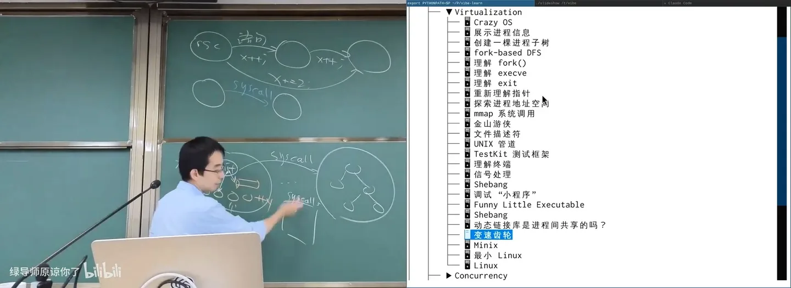
📷 LD_PRELOAD 可以在应用和内核之间插入一层虚拟化实现
回到原视频 (00:46:30)
2.5 并发：打开魔鬼的盒子
为了让多个处理器并行工作，进程内部出现多个共享内存的线程。共享内存让通信成本极低，同时引入数据竞争。
课程从“山寨支付宝”的竞态开始，逐步讲到：
- 线程、栈和线程局部存储；
- mutex、原子指令和自旋锁；
- 宽松内存模型；
- Peterson 算法及其局限；
- 生产者消费者；
- 条件变量和信号量；
- 死锁、lockdep 和 ThreadSanitizer；
- 协程、Go channel、GPU 和 CUDA；
- 指令级并行和 SIMT。
flowchart TD
THREAD["多线程"] --> RACE["数据竞争"]
RACE --> MUTEX["互斥"]
MUTEX --> ATOMIC["原子指令"]
RACE --> SYNC["条件同步"]
SYNC --> COND["条件变量"]
SYNC --> SEM["信号量"]
MUTEX --> DEADLOCK["死锁"]
DEADLOCK --> DETECT["lockdep / TSAN"]
THREAD --> COROUTINE["协程 / Channel"]
THREAD --> GPU["GPU / SIMT"]
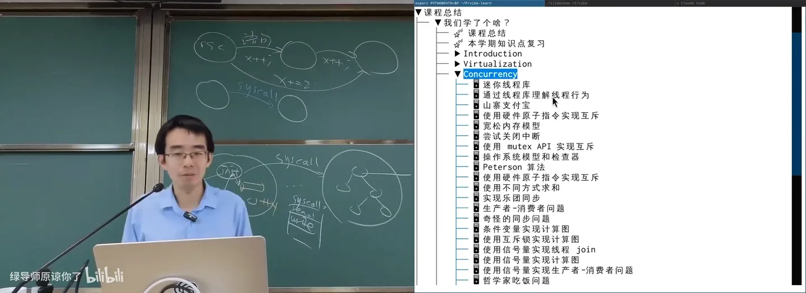
📷 并发是整学期最独立也最困难的一部分，核心是控制执行流之间的顺序
回到原视频 (00:48:30)
2.6 I/O、设备和持久化
操作系统统一管理 I/O 设备。设备驱动把系统调用翻译成设备寄存器和协议操作，再通过 struct file_operations 暴露成文件接口。
课程覆盖了：
- GPIO LED；
- 打印语言 PostScript；
- 设备驱动和 KVM；
- WebCam 与 V4L2；
- Linux Block I/O；
- 磁盘、NVMe 和 SSD；
- 文件系统、FAT、ext4；
- WAL、Crash Consistency Checker；
- LVM、OverlayFS、符号链接和 mmap 数据结构。
flowchart TD
APP["应用 read / write"] --> VFS["文件系统接口"]
VFS --> DRIVER["设备驱动"]
DRIVER --> DEVICE["硬盘 / USB / GPU / 摄像头"]
VFS --> FS["文件系统"]
FS --> BLOCK["Block Device"]
BLOCK --> STORAGE["持久化存储"]
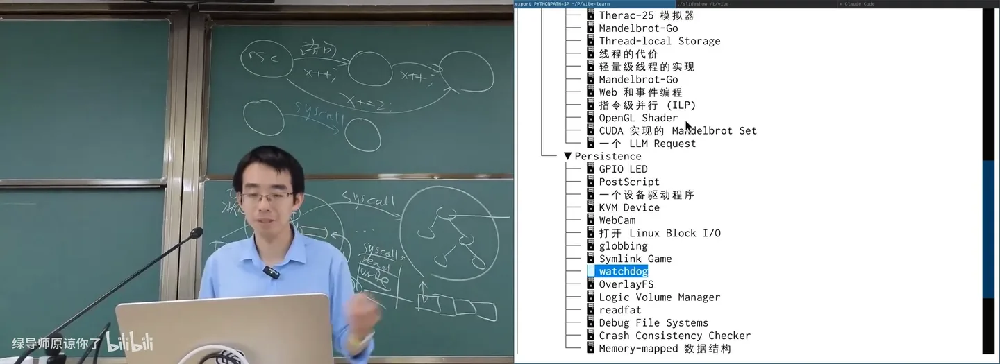
📷 操作系统把复杂设备抽象成文件接口，并在其上构建文件系统
回到原视频 (00:52:30)
2.7 Systems 的核心：好抽象
操作系统的主题可以概括为：
用好的抽象隐藏底层复杂性，同时尽可能保留底层能力。
每一层抽象都在做两件事：
- 对上层提供干净模型；
- 对下层保留足够控制能力。
flowchart TD
APP["应用抽象"] --> SYSCALL["系统调用"]
SYSCALL --> OBJECT["操作系统对象"]
OBJECT --> DRIVER["驱动程序"]
DRIVER --> HARDWARE["硬件"]
HARDWARE --> COMPLEX["复杂性消失了吗？"]
COMPLEX --> NO["没有，只是被封装"]
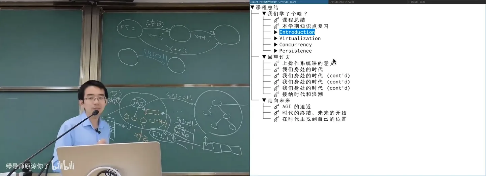
📷 好的系统抽象降低开发者心智负担，但底层复杂性并没有消失
回到原视频 (00:54:00)
3. 回望过去：技术与时代的 Scaling
3.1 Teaching is a Powerful Tool to Learn
讲师引用费曼的观点：在课堂上重新思考已经清楚的基本问题，本身就能产生新的研究方向。每一年重新讲授操作系统，都可能发现更好的组织和更深刻的联系。
flowchart LR
TEACH["教学"] --> QUESTION["重新提问"]
QUESTION --> UNDERSTAND["更深入理解"]
UNDERSTAND --> RESEARCH["发现新研究问题"]
RESEARCH --> TEACH
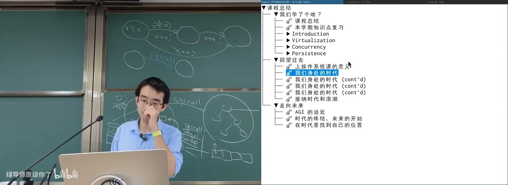
📷 教学不是知识输出的终点，而是重新学习和发现问题的过程
回到原视频 (00:56:30)
3.2 历史突破不是偶然
课堂把多项技术突破放在 scaling 曲线中：
- 1997 年 DeepBlue 击败国际象棋世界冠军；
- 1998 年 Google 建立在存储密度增长之上；
- Intel、NVIDIA 分别抓住 CPU 和并行计算浪潮；
- OpenAI 建立在大规模语言模型 scaling 上。
flowchart TD
COMPUTE["算力指数增长"] --> DEEPBLUE["DeepBlue"]
STORAGE["存储密度增长"] --> GOOGLE["Google"]
CPU["CPU / 摩尔定律"] --> INTEL["Intel"]
GPU["GPU 并行计算"] --> NVIDIA["NVIDIA"]
SCALE["大模型 Scaling Law"] --> OPENAI["OpenAI / LLM"]
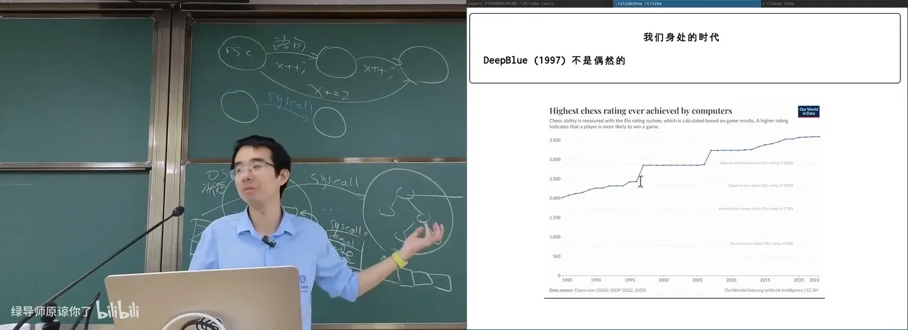
📷 多项历史突破都发生在算力、存储或模型能力出现指数增长之后
回到原视频 (00:57:30)
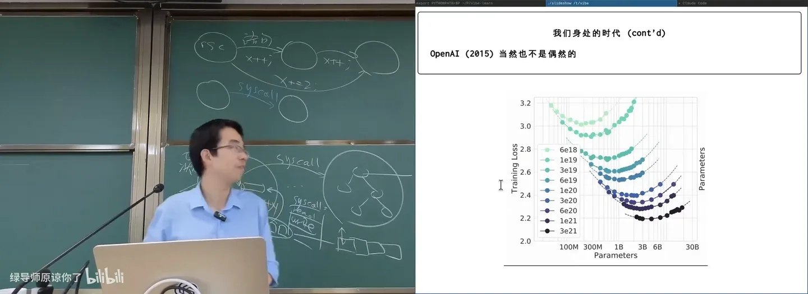
📷 GPU 与 AI 训练规模形成新的指数增长曲线
回到原视频 (00:59:30)
每当某个关键能力开始指数增长，相关领域就可能发生结构性变化。
3.3 从事实记忆转向 First Principles
课程尤其强调从需求推导设计：
应用需要加载二进制
-> 进程地址空间需要若干区域
-> 可执行文件必须描述这些区域
-> ELF 文件格式自然出现
应用需要动态加载库
-> 需要符号解析与延迟绑定
-> 动态链接器和 PLT/GOT 自然出现
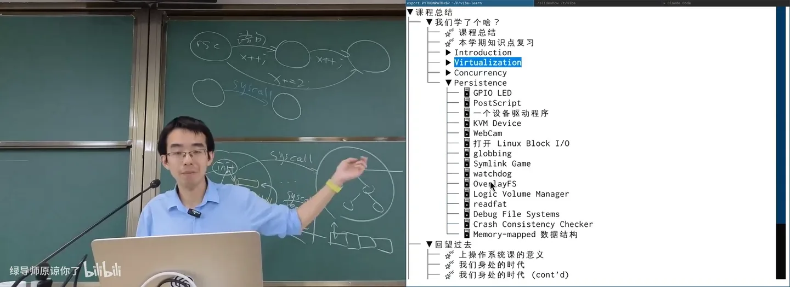
📷 从应用需求出发可以重新推导 ELF、进程地址空间和动态链接
回到原视频 (01:01:20)
Git 是另一个例子。不要只记 command，而要从需求理解它：
- 开发者需要本地版本管理；
- 不同开发者之间需要同步；
- 快照可以表示为 tree of blobs；
- 提交形成 commit DAG；
- branch、stash、worktree 都可以从数据结构自然推导。
flowchart TD
SNAP["文件系统快照"] --> BLOB["Blob"]
SNAP --> TREE["Tree of Blobs"]
TREE --> COMMIT["Commit"]
COMMIT --> DAG["Commit DAG"]
DAG --> BRANCH["Branch"]
DAG --> STASH["Stash"]
DAG --> WORKTREE["Worktree"]
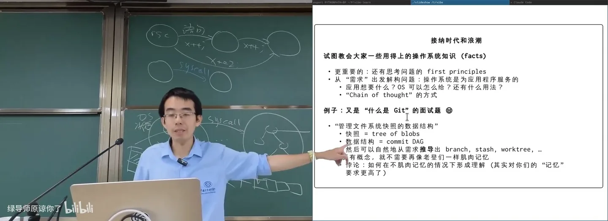
📷 Git 可以被理解为管理文件系统快照的数据结构和提交 DAG
回到原视频 (01:04:00)
4. 走向未来：Agentic AI 与 AGI
4.1 三个阶段的能力放大
大模型的能力增长可以分成三类 scaling：
Pretraining-time scaling
更多高质量数据、更大参数、更强基础模型。
Post-training scaling
通过监督、强化学习和可验证反馈提高特定能力。代码具有清晰反馈信号，因此成为模型能力提升的重要训练场。
Test-time scaling
给模型更多思考时间、采样次数、检查和重试机会。模型可以在推理阶段继续搜索、验证和改进答案。
flowchart LR
PRE["Pretraining Scaling"] --> BASE["强基础模型"]
BASE --> POST["Post-training Scaling"]
POST --> SKILL["代码 / 推理 / 工具能力"]
SKILL --> TEST["Test-time Scaling"]
TEST --> THINK["更长思考、自检、重试、搜索"]
THINK --> OUT["更强任务表现"]
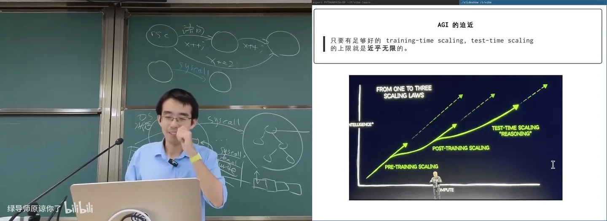
📷 预训练、后训练和测试时 scaling 共同推动模型能力增长
回到原视频 (01:06:40)
可以把高中到大学类比为：
- 高中阶段是广泛预训练；
- 大学专业方向是后训练和微调；
- 考试时的复盘与检查是 test-time scaling。
4.2 用“穷尽”解决难题
当 AI 面对陌生数学题时，可以把问题与一个巨大的题集进行匹配，让模型遍历相似题目和解答，再组合已有思路。
核心观察是：
很多“难题”并没有真正新的结构，只是已有技巧的新组合。
flowchart TD
PROBLEM["当前问题"] --> RETRIEVE["枚举相似题与解答"]
RETRIEVE --> MATCH["匹配问题和技巧"]
MATCH --> COMPOSE["组合已有解法"]
COMPOSE --> VERIFY["验证答案"]
VERIFY -- "失败" --> RETRIEVE
VERIFY -- "成功" --> SOLVED["解决"]
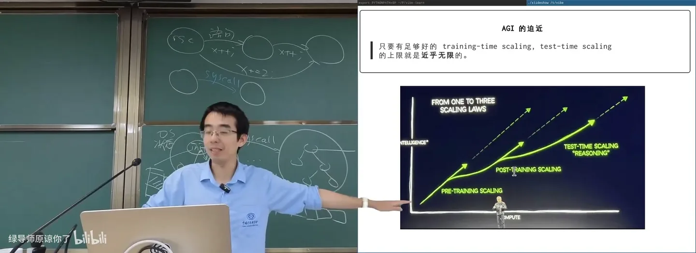
📷 Test-time scaling 通过枚举、匹配、组合与验证扩大有效推理预算
回到原视频 (01:08:30)
只要有足够算力和反馈，这种过程可以持续扩展。
4.3 教育和工作的结构变化
讲师的判断是：AGI 会逐渐削弱传统“服从性教学”和“信息差权力”的价值。
- 学生可以获得适合自己的个性化教学；
- Agent 可以补平普通人之间的知识信息差；
- 过去依赖记忆、流程和资历的优势会缩小；
- “比别人不菜一点”不再足以稳定胜出；
- 真正稀缺的是想象力、提出问题、判断和持续学习能力。
flowchart TD
AGI["AGI 能力提升"] --> TUTOR["个性化 AI 教师"]
AGI --> AGENT["通用 Agent"]
TUTOR --> EDUCATION["教育方式变化"]
AGENT --> INFO["信息差缩小"]
INFO --> WORK["职业结构变化"]
EDUCATION --> POSITION["个人需要重新定位"]
WORK --> POSITION
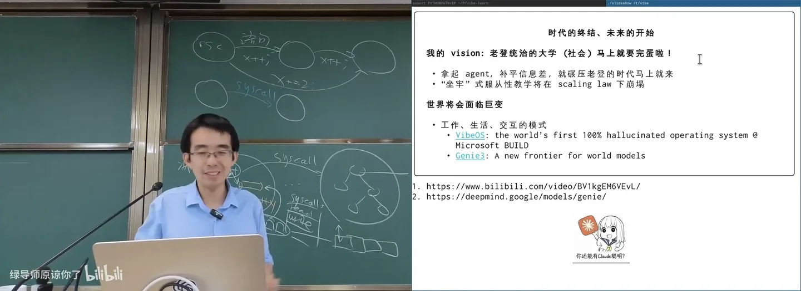
📷 AGI 会同时改变知识获取、教学方式和职业竞争结构
回到原视频 (01:10:50)
未来的竞争不再是简单记忆和重复执行，而是能否定义问题、构建 Agent 工作流、判断结果并探索真正的未知。
4.4 VibeOS：完全由模型幻觉出来的操作系统
课堂播放了微软 BUILD 的一个演示项目 VibeOS。它是一个虚拟机镜像，界面包含记事本、计算器、浏览器和应用商店。
特别之处在于：
- 没有传统意义上的应用代码；
- 按钮、事件处理和界面逻辑都由模型实时生成；
- 网页内容和搜索结果也是模型幻觉；
- 甚至可以继续模拟嵌套操作系统和终端。
flowchart LR
USER["用户输入"] --> MODEL["生成模型"]
MODEL --> UI["实时生成 UI"]
MODEL --> CONTENT["实时生成内容"]
MODEL --> LOGIC["实时解释操作"]
UI --> SCREEN["屏幕状态"]
CONTENT --> SCREEN
LOGIC --> SCREEN
SCREEN --> MODEL
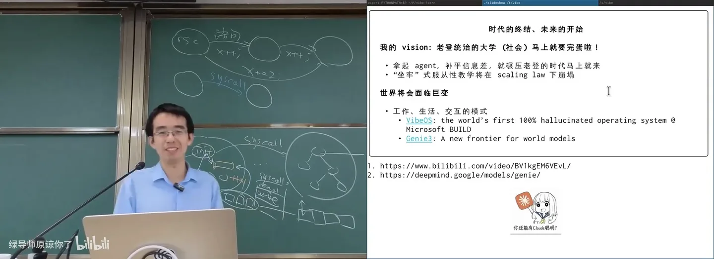
📷 VibeOS 演示了没有传统应用代码、由模型实时生成界面和交互的全新计算形态
回到原视频 (01:20:40)
这类系统目前更像原型，但它提示了一个方向：
- 用户只需要表达意图；
- 模型生成界面、逻辑和数据；
- 世界模型实时维持环境一致性；
- 软件从“预先编写”转向“即时生成”。
4.5 Generative Software Engineering
下一步课程从传统 Web Coding 改名为 Generative Software Engineering，关注：
- 使用国产一线模型构建应用；
- Agent Harness 设计；
- 工具、Skills 和 Subagents；
- 自动化评测与反馈；
- 如何把复杂任务拆给模型；
- 如何在 Agent 时代获得可信结果。
flowchart TD
GEN["Generative Software Engineering"] --> MODEL["基础模型"]
GEN --> HARNESS["Agent Harness"]
GEN --> TOOLS["Tools / Skills"]
GEN --> EVAL["自动评测"]
HARNESS --> TASK["复杂任务分解"]
EVAL --> RELIABILITY["可靠性与验证"]
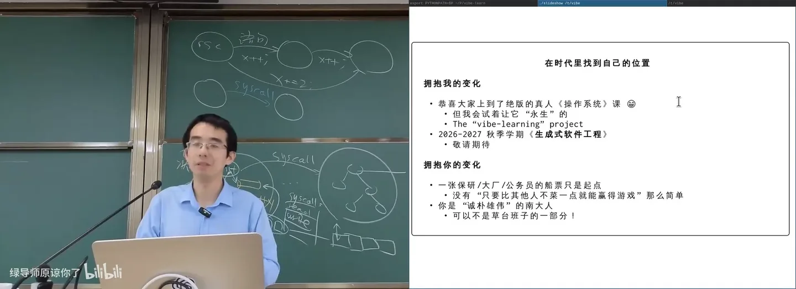
📷 课程的未来方向是让模型、工具、测试和 Agent 工作流共同构建软件
回到原视频 (01:22:30)
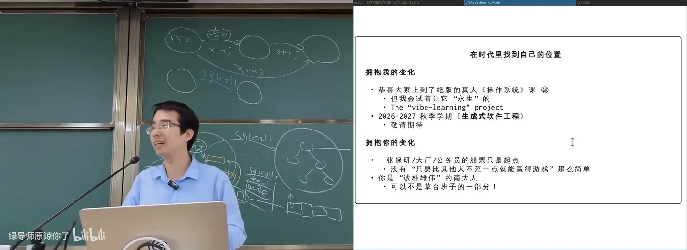
📷 课程结束时，每个人都需要在变化时代找到自己的位置
回到原视频 (01:24:00)
5. 总结：操作系统课留下的不是一张船票
这门课从 API、进程、地址空间、并发和文件系统出发，最终回到一个更普遍的问题：如何在快速变化的世界中保持理解和创造能力。
flowchart TD
OS["操作系统"] --> ABSTRACT["抽象"]
OS --> CONCURRENCY["并发"]
OS --> PERSIST["持久化"]
OS --> SECURITY["安全"]
ABSTRACT --> SYSTEMS["Systems Thinking"]
CONCURRENCY --> SYSTEMS
PERSIST --> SYSTEMS
SECURITY --> SYSTEMS
SYSTEMS --> AI["Agentic AI"]
AI --> FUTURE["重新定义学习、工作与软件"]
核心结论：
- 操作系统是应用需求、硬件能力和抽象设计之间的桥梁；
- 真正应该掌握的是 first principles，而不是孤立事实；
- Unix 哲学与 Agent 工作流高度契合；
- Pretraining、post-training 和 test-time scaling 正在共同推动 AGI；
- 信息差和服从性学习的价值会下降，问题定义、判断和想象力更加重要；
- VibeOS 展示了“软件即时生成”的可能性，但可靠系统仍需要操作系统、抽象、验证和工程约束；
- 大学、工作和个人发展的游戏规则都会发生变化。
课程结束时最重要的不是拿到一张保研、大厂或公务员的船票，而是理解船票只是起点。面对快速 scaling 的 AI，每个人都需要找到自己的兴趣、判断和长期方向。
附：课程 Demo 与延伸资料
Introduction
Virtualization
Concurrency
Persistence
课程与未来方向
版权与署名：本讲课程材料由蒋炎岩（jyy）编写。课程讲义与幻灯片采用 Creative Commons BY-NC 4.0 许可；本电子书保留课程出处、作者署名与许可说明。
课程来源与版权说明
课程：2026 春季学期《操作系统原理》
讲师：蒋炎岩（jyy）
官方课程主页：https://jyywiki.cn/OS/2026/
官方讲义：https://jyywiki.cn/OS/2026/lect30.md
视频来源：Bilibili BV1q2jh6FEhX
版权说明：课程讲义与幻灯片归蒋炎岩所有，采用 Creative Commons BY-NC 4.0 许可；本电子书是对课堂讲授的书面化重构，保留出处与许可说明。